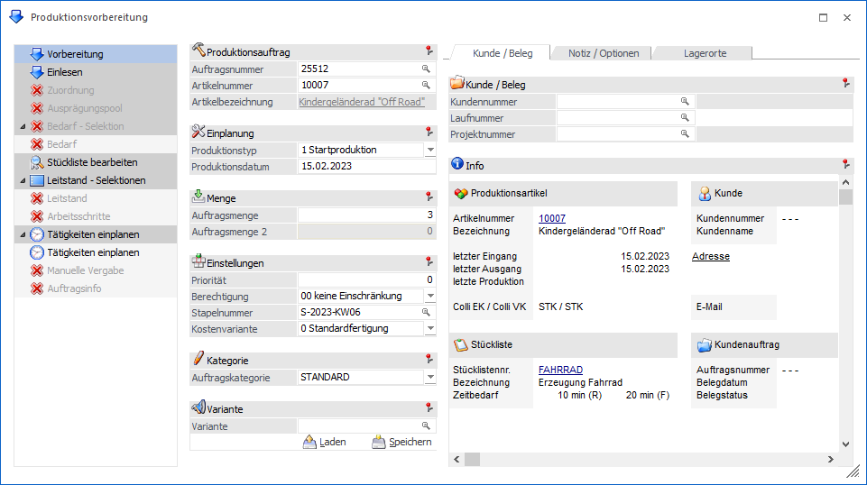

Über den Menüpunkt
1 WinLine PPS
1 Produktion
1 Produktionsvorbereitung
können Produktionsaufträge manuell angelegt werden.

Für eine schnelle und zielführend Auftragsanlage ist das Fenster in die folgenden Bereiche unterteilt:
ü Navigation und Auftragsdaten
Hinweis
In der Produktionsvorbereitung können per Drag & Drop
jederzeit externe Dateien zum Produktionsauftrag hinzugefügt werden. Wurde ein
Dokument hinzugefügt, so erscheint das Icon  im Informationsbereich des Registers
Kunde / Beleg.
im Informationsbereich des Registers
Kunde / Beleg.
Die archivierten Dokumente selber können jedoch erst nach der Anlage des Auftrags bzw. der Simulation aufgerufen werden. Hierfür steht u.a. im Fenster Arbeitsschrittstatus ein DrillDown (im Informationsbereich) zur Verfügung.
Buttons
Ø Ok
Durch Anwahl des Buttons "Ok" bzw. der Taste F5 wird der der Produktionsauftrag mit den bisherigen Informationen abgespeichert. Je nachdem, welche Einstellungen in dem Produktionsartikel, der Stückliste, den PPS-Parametern und der Vorbereitung (Register Notiz / Optionen) getroffen wurden, verzweigt die WinLine automatisch in weitere Programmbereiche.
ü Zuordnung
Dieser Programmbereich
wird automatisch geöffnet, wenn der Produktionsartikel oder eine der benötigten
Komponenten mit Ident- bzw. Chargennummer geführt wird oder eine sonstige
Ausprägung (z.B. Farbausprägung) beinhaltet. Zusätzlich wird das Fenster
angezeigt, wenn ein Artikel mit Lagerortstruktur vorhanden ist.
Achtung
Grundvoraussetzung für eine
Darstellung der Ausprägungs- und / oder Lagerortartikel ist eine korrekte
Einstellung der Ausprägungsoptionen. Dort muss für den jeweiligen Typ zumindest
"2 - kann erfolgen" hinterlegt worden sein (nähere Informationen entnehmen Sie
bitte dem Kapitel "Aufteilungsoptionen").
Des Weiteren darf die Option
"Zuordnungsfenster" aus den PPS-Parametern (Bereich "Produktionsauftragsanlage")
nicht auf "1 - nie öffnen (Fix)" gestellt werden.
ü Verfügbarkeitsliste
Dieser
Programmbereich wird automatisch geöffnet, wenn in den PPS-Parametern (Bereich
"Produktionsauftragsanlage") die Option "Artikelverfügbarkeit prüfen" aktiviert
wurde.
ü Produktionsauftrag - Tätigkeiten
einplanen
Dieser Programmbereich wird automatisch geöffnet, wenn in der
Stückliste des zu produzierenden Artikels Tätigkeiten hinterlegt wurden.
Ø Ende
Durch Anwahl des Buttons "Ende" bzw. der Taste ESC wird das Fenster geschlossen und die Auftragsanlage abgebrochen.